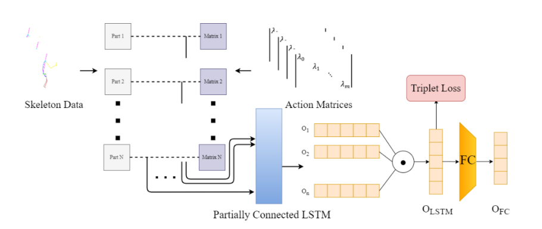

*: Equal contribution.
§: Corresponding author.
1 Beijing Sport University
Human action quality assessment (AQA) recently has attracted increasing attentions in computer vision for its practical applications, such as skill
training, physical rehabilitation and scoring sports events. In this paper, we propose a partially connected LSTM with triplet losses to evaluate different skill
levels. Compared to human action recognition (HAR), we explain and discuss
two characteristics and countermeasures of AQA. To ignore the negative influence of complex joint movements in actions, the skeleton is not regarded as a
single graph. The fully connected layer in the LSTM model is replaced by the
partially connected layer, using a diagonal matrix which activatesthe corresponding weights, to explore hierarchical relations in the skeleton graph. Furthermore,
to improve the generalization ability of models, we introduce additional functions
of triplet loss to the loss function, which make samples with similar skill levels
close to each other. We carry out experiments to test our model and compare it
with seven LSTM architectures and three GNN architectures on the UMONSTAICHI dataset and walking gait dataset. Experimental results demonstrate that
our model achieves outstanding performance.

@inproceedings{10.1007/978-3-031-18913-5_17,
author = {Wang, Xinyu and Li, Jianwei and Hu, Haiqing},
title = {Skeleton-Based Action Quality Assessment via Partially Connected LSTM with Triplet Losses},
year = {2022},
doi = {10.1007/978-3-031-18913-5_17}
}